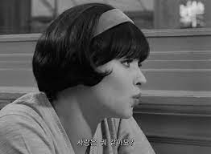

창문 너머 옅은 해무가 낀 바다 위에 홀로 선 작은 섬 쉽게 답을 찾기 어려운 생각들을 말로 하는 대신 책상 앞에 앉아 단어와 문장으로 빈 문서를 채우며 자신과 끊임없이 대화를 시도한 윤진서. 그로 인해 마음의 응어리를 하나 둘 풀어낸 그녀는 영화 속 등장인물이 아니라, 온전한 그녀 자신의 모습으로 사람들 앞에 설 용기를 냈다. 데뷔 이전의 모습을 시작으로 사랑, 이별, 여행에 관한 무수한 이야기들을 써내려간 문장과 무심한 듯 그렇게 여기 존재하고 있음을 증명하는 흑백 사진은 지나온 길을 반추하며 나직하게 속삭이는 윤진서의 음성을 떠올리게 한다. 앞으로 더 많은 것을 듣고, 더 많은 것을 보며 살아가고 싶다고 말하는 윤진서는 이로써 오늘도 그녀만의 방식으로 그녀의 인생을 살아가고 있다. 
홀로 인생을 탐구하며 남긴 그녀의 흔적으로 인해 우리는 미처 깨닫기도 전에 우리 가슴에 촉촉이 스며든 그녀의 문장에 놀라면서도, 이를 증발시키려 하기보다는 더욱 깊이 배어들기를 기대할 것이다